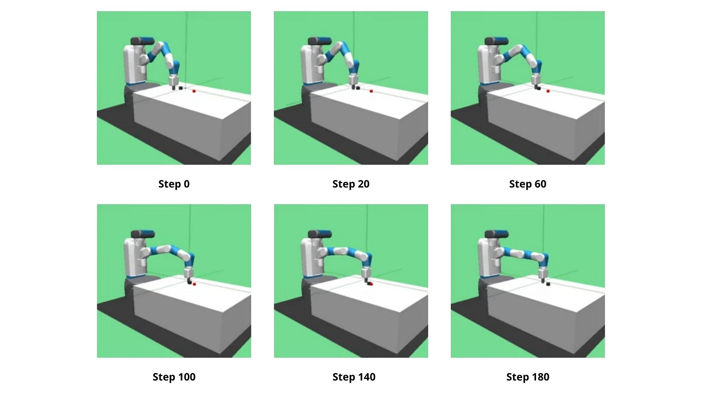

Policy Gradient Reinforcement Learning using a JAX Neural Network

Objective
This was my first attempt at reinforcement learning. My goal was to implement a reinforcement learning algorithm that could learn the best way to control a robot arm and slide a puck to a goal position. Specifically, I wanted to use the JAX library to achieve this.
JAX allows for faster execution of machine learning algorithms through its use of the Accelerated Linear Algebra (XLA) compiler, automatic differentiation, parallelization and just-in-time (JIT) compilation.
Action
First, I set up the interface to the (now archived) Open AI Gym FetchSlide environment. Through this, I could simulate the environment based on actions my algorithm would take and then receive results depending on the quality of the action.
For the policy itself, I used JAX to create a fully connected neural network and applied updates on the network based on JAX style automatic differentiation and parallelization.
Finally, I set up the policy gradient algorithm. I simulated a batch of trajectories, collected their rewards, found the best trajectories, estimated the policy gradient based on results from these trajectories, and then updated the policy using the Adam optimizer.
Result
After 400 training iterations of 100 trajectories per training batch, the success rate improved from 2% to 5%. Overall, this success rate is very low, but shows that the policy gradient was successful in learning to achieve its goal. With growing iterations, its success rate was shown to increase.
Areas of Improvement
When training and calculating the best trajectories, I kept a running batch of the best trajectories called elite trajectories. When this batch grew over 100, I eliminated the first 20 with the reasoning that earlier trajectories are likely worse than newer ones. However, due to the noise in the model, it's likely that older trajectories could have been better. Hence, it would have been smarter to sort the trajectories in the elite batch and delete the least performing ones across iterations.
Vanilla policy gradient is well known to be limited in capability, but exists to show that reinforcement learning algorithms can be successful given enough time and resources. A more robust algorithm like PPO or TRPO could likely achieve better results with the same number of training iterations.